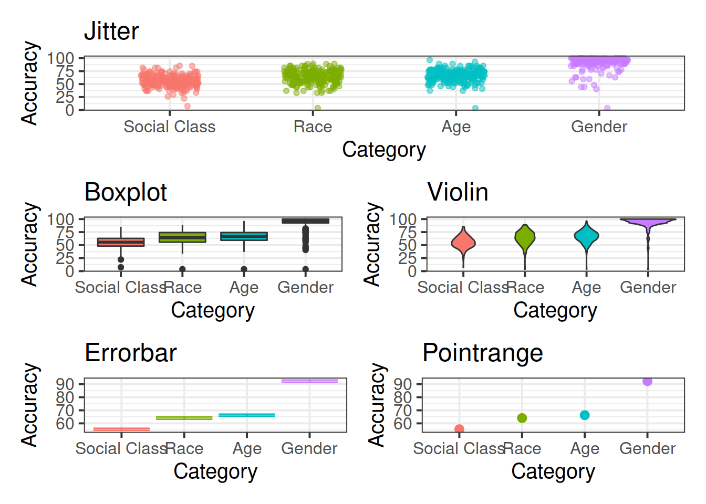

Tidyverse & RMarkdown
This is a little recap on Tidyverse & RMarkdown, for anyone who wants it. It is mostly a repeat of the USMR course, but may come in handy as a quick refresher after the christmas break.
Tidyverse & RMarkdown are a set of packages and tools which will help you to make your work in R (both analysis and reporting) more efficient, aesthetically pleasing, and (importantly) reproducible.
Packages
You will likely already have these packages installed, but if not, then do so now.
- tidyverse (ggplot is part of tidyverse)
- rmarkdown
- haven (this one is just for reading in data from other software like SPSS or SAS)
Lecture slides
There are some lecture slides which accompany these exercises. They can be accessed here. The data (in .RData format) for the lecture can be found at https://uoepsy.github.io/data/Weather_2014.RData. You can get it into your R workspace using:
load(url("https://uoepsy.github.io/data/Weather_2014.RData"))Readings & Resources
R for Data Science: https://r4ds.had.co.nz/index.html
- Data visualization: Chapters 3 and 28
- Data management (tidyverse): Chapters 5 and 12
- R Markdown: Chapter 27
Extras:
- Kieran Healey has a brilliant book on getting started with ggplot: Data Visualisation; a practical introduction
- Another great one is Fundamentals of Data Visualisation by Claus O. Wilke
Data Visualization with ggplot
For plotting, you may be familiar with the popular ggplot2 package from some of the USMR labs last semester. We’re going to be using this more and more, so the first part of today’s lab will focus on ggplot.
Visualization is the first step in analysis
Geoms & stat_summary
To learn about some of the different functionalities of ggplot, we’re first going to need some data…
The ggplot2 package comes as part of the tidyverse, so if we use library(tidyverse) then we are also loading ggplot2!
Read in the data using load() and url(), and extract some summary statistics.
Try to make a summary plot showing mean accuracy for each category of judgment
hint: try looking into ?stat_summary
Explore the different ways of showing variability. Construct a plot using each of the following geoms:
The top three plots (jitter, boxplots and violins) all show all of the data, so we don’t need to use stat_summary for these. However, the bottom two (errorbars and pointranges) require us to summarise the data into means and standard errors, so if you are using stat_summary we need to use stat_summary(fun.data=mean_se).

Combine two of the geoms used above to create a visualization of the mean accuracy, a measure of variability, and all of the data points.
Refine the plot by, for example, removing unnecessary elements, adding useful annotations (e.g., chance performance = 50%), selecting a good color scheme, etc.
tip: This is where google becomes really helpful, for example
Recreating a plot
Try to recreate the graph below using ggplot (if you like, try to make it better!).

Women in computer science
The data (in .csv format) can be downloaded from https://uoepsy.github.io/data/women_computer_science.csv
You can use read_csv("https://uoepsy.github.io/data/women_computer_science.csv") to read it directly into R.
Data management with the Tidyverse
The collection of R packages known as the tidyverse provides many incredibly useful functions that can speed up your workflow. They are often contrasted to Base R in that they provide an alternative grammar which is aimed at being more predictable and consistent. Some people find the tidyverse a lot more intuitive, but others don’t, and the transition can sometimes be difficult!
In USMR, we taught you both Base R and tidyverse alongside one another. You will have seen code like:
data %>%
mutate(
newvar = oldvar*200
) %>% filter(newvar > 400) %>%
select(newvar)as well as code such as:
data$newvar <- data$oldvar*200
data$newvar[data$newvar>400]We believe that there is no right way to write code. You should program in the way which you feel most comfortable with. For a great many people, that may involve using a combination of both Base R and tidyverse, for others it might be only Base R, and for some they might try to do everything the tidyverse way. All approaches are equally good.
Piping!
It may look a bit weird (%>%), but the pipe operator in R is incredibly useful. Its fundamental role is to ‘chain’ functions together. Previously we wrapped functions around one another, with lots of brackets, but with %>% we can link the intermediate output of one function and take it as the input of another.
The two functions f and g, when used in combination like g(f(x)), can now be written as x %>% f() %>% g(). You don’t even always need the brackets, and coulde write x %>% f %>% g!
The default behaviour of %>% is to put the output of the LHS (left hand side) in as the first argument in the RHS. However, you can change this by using %>% in combination with a ., to specify which argument you want it to be inputted as:
100 %>% rnorm(10, ., 1)is equal tornorm(10, 100, 1)- The default behaviour:
100 %>% rnorm(0, 1)is implicitly saying100 %>% rnorm(., 0, 1), which is equal tornorm(100, 0, 1).
Translate the following statements between Base R and sequences of pipes. The first is shown for you.
1
Base R:
round(mean(rnorm(100,0,1)))Pipes :
rnorm(100,0,1) %>%
mean() %>%
round()2
Base R:
x<-10:100
round(exp(diff(log(x))), 2)Pipes:
3
Pipes:
6 %>% round(pi, digits=.)Base R:
Grouping, summarising, filtering, mutating and selecting
Tidyverse also gives us really useful functions for wrangling data. There are many, but some of the key ones we’ll look at here are:
select()extracts columns
filter()subsets data based on conditions
mutate()adds new variables
group_by()group related rows together
summarise()/summarize()reduces values down to a single summary
For a quick example, if we want to calculate the median accuracy for each category, but only after removing those with an accuracy <50, we could use:
speech_ses %>%
filter(Accuracy>50) %>%
group_by(Category) %>%
summarise(
mdn_accuracy = median(Accuracy)
)And if we wanted to also calculate the total n, and the mean accuracy for each category, we could add:
speech_ses %>%
group_by(Category) %>%
summarise(
n = n(),
mean_acc = mean(Accuracy)
)Load the haven package, and read in the data using read_sav() (.sav is the type of file which comes out of another stats software, SPSS).
Explore the data a bit for yourself in the way you feel most comfortable.
You can download the data from https://uoepsy.github.io/data/exam.sav to your computer, and then read it in, or you can do so straight from the url.
library(haven)
exam <- read_sav("https://uoepsy.github.io/data/exam.sav") Using the exam.sav data:
Calculate the mean score for each exam
Calculate the mean score for each exam for female students only
Make a new dataframe containing only the exam scores for males for exam number 1, with a new variable indicating whether they passed or not (pass = a score of 40)
Calculate the average score for each exam for male and female students
Reshaping
The same data can be represented in many different ways. We often discern between long and wide formats, and each of these are useful in different ways.
Consider, the below example, showing the same data in long format on the left, and in wide on the right.

There are some useful functions which we can use to move between these formats: pivot_longer() and pivot_wider(). Check out an explanation of them by typing vignette("pivot") into your console.
Convert the USArrests data set from a wide to a long format so that instead of separate variables for each crime type (Murder, Assault, Rape), there is one variable that identifies the crime type and one variable that contains the rates for each crime type for each state.
Make a scatterplot showing the relationship between each type of violent crime rate and percent of population living in urban areas.
Less guidance
Tidy the data and make a graph of average accuracy for each question type.
You might have to use as_tibble(ability) or as.data.frame(ability) because it is initially stored as a matrix.
Hint: the separate() function may come in handy at some point.
Reproducible research with RMarkdown
We’re also going to keep using RMarkdown. This is a really useful means of making a report reproducible. Essentially, it is a combination of R code and normal text. It will require learning a few new formatting rules (the “markdown” bit), but it means that in one file you can read in and analyse your data, and compile it to a pdf. Which essentially means that if your data or analysis changes, then the results you report change too without having to edit them!
You were required to use RMarkdown for your USMR coursework before christmas, so hopefully many of you are beginning to feel a bit more comfortable with it by now. If you want to, we suggest that you go over some of the videos below.
General RStudio Overview
(RMarkdown is introduced in part 2)